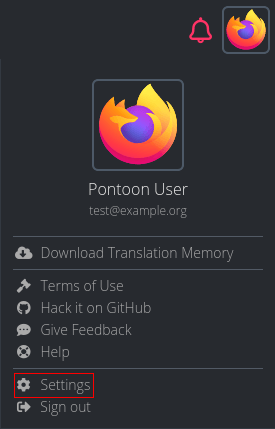
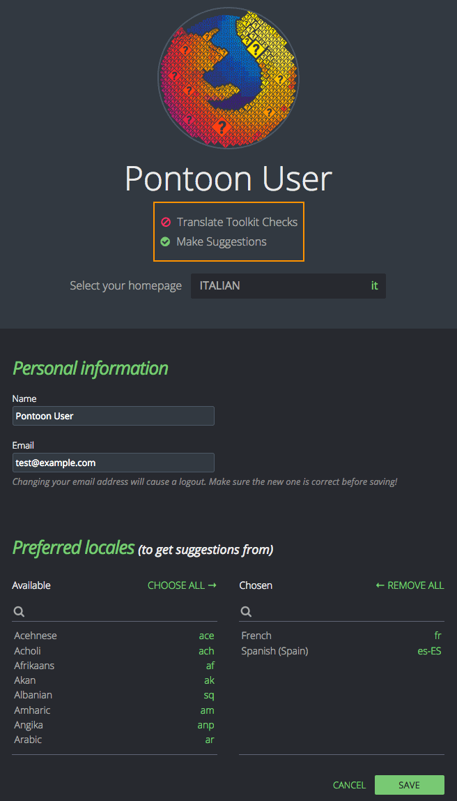
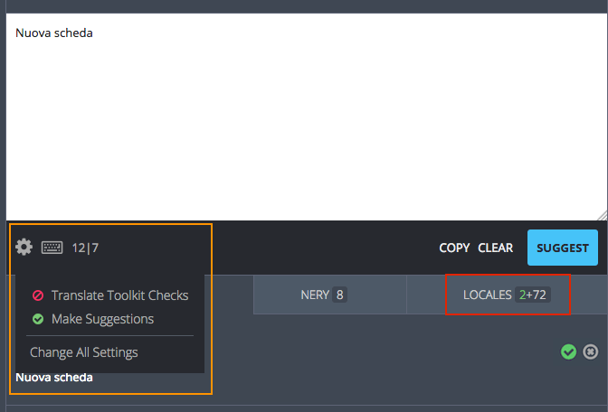

User accounts and settings
Creating an account
Pontoon currently uses Firefox Accounts to manage users, so you will need to create an account in order to log in.
To create an account on Pontoon, simply click on the Sign In button in the top right corner.

User settings
User settings can be accessed by clicking the user avatar in the top right corner, and selecting Settings.

Profile picture can be set or updated on Gravatar by clicking directly on the image.
In the Personal information section it’s possible to update the displayed name and change the email address used to log in to Pontoon.
It’s also possible to set the default homepage displayed when visiting Pontoon as a logged in user. Current options are:
- Default homepage (Localization page for the Pontoon Intro project).
- A Team page.

Both Translation Toolkit Checks and Make suggestions are checkboxes. In the picture above Translation Toolkit Checks is disabled while Make suggestions is enabled.
- Translation Toolkit Checks (check for number of sentences, placeholders, HTML tags, punctuation, etc.) are performed when saving a translation. For more information about quality checks see this document.
- Make suggestions allows a translator or a manager to submit suggestions instead of translations.
Both settings can also be changed directly from the gear menu (highlighted in orange) when translating strings. User settings are also accessible from this menu by selecting Change all settings.

Preferred locales can be used to display a specific group of locales before others in the LOCALES tab when translating strings (highlighted in red). In this case, the user chose to display fr and es-ES before other translations. Since they’re both available the tab displays 2+72, meaning 2 preferred locales plus all others.

User roles
There are currently four user roles in Pontoon.
- Contributors can only submit suggestions. This is the default role for new users.
- Translators can submit translations directly in a specific locale, and review other contributors’ suggestions.
- Managers can perform the same actions as translators, but also manage other users and update their permissions.
- Admins can administrate Pontoon, e.g. adding or removing projects, and act as managers for all locales.
Managing permissions
A manager can upgrade other users’ permissions within a locale. To manage users, open the team page and select the PERMISSIONS tab (it will only be visible to managers and admins).
By default there’s only a General section: permissions defined here will apply to all projects, but can be overridden by custom project permissions.

To move a user to a different column simply hover the email address: arrows will appear to move the element to the left or right. Note that a user needs to log in at least once in Pontoon in order to upgrade their permission – simply having a Firefox Account is not sufficient.
Use the SAVE button to store the configuration before leaving this window.
By default, in the TEAM CONTRIBUTORS column will only appear users that have submitted suggestions before for this locale. You can click ALL USERS (highlighted in red) to display all existing users, then use the search field to narrow down the list.
By clicking ADD CUSTOM PERMISSIONS PER PROJECT (highlighted in orange), it’s possible to add specific permissions for a project. This can be useful to make sure that only some users can submit translations for a specific project, for example if it’s maintained by one person.

Note that it’s not possible to override managers, they will always be able to submit translations in any of the projects available for their locale.